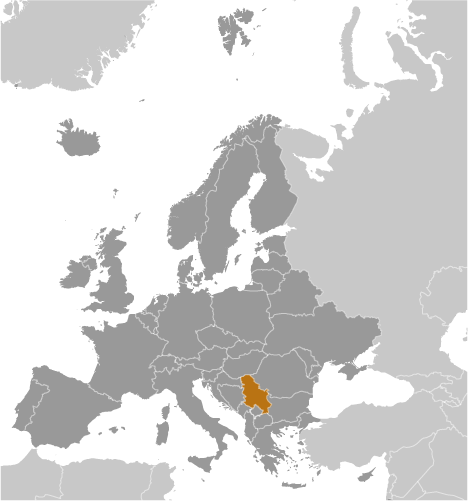
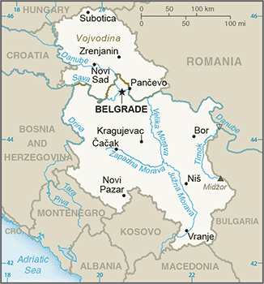
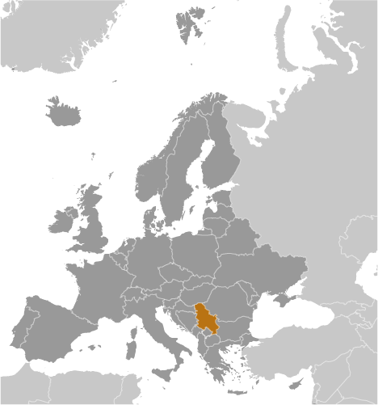
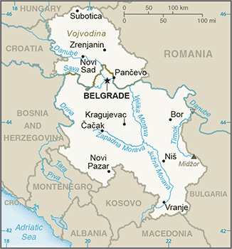

Europe :: SERBIA
Introduction :: SERBIA
-
The Kingdom of Serbs, Croats, and Slovenes was formed in 1918; its name was changed to Yugoslavia in 1929. Communist Partisans resisted the Axis occupation and division of Yugoslavia from 1941 to 1945 and fought nationalist opponents and collaborators as well. The military and political movement headed by Josip Broz "TITO" (Partisans) took full control of Yugoslavia when their domestic rivals and the occupiers were defeated in 1945. Although communists, TITO and his successors (Tito died in 1980) managed to steer their own path between the Warsaw Pact nations and the West for the next four and a half decades. In 1989, Slobodan MILOSEVIC became president of the Republic of Serbia and his ultranationalist calls for Serbian domination led to the violent breakup of Yugoslavia along ethnic lines. In 1991, Croatia, Slovenia, and Macedonia declared independence, followed by Bosnia in 1992. The remaining republics of Serbia and Montenegro declared a new Federal Republic of Yugoslavia (FRY) in April 1992 and under MILOSEVIC's leadership, Serbia led various military campaigns to unite ethnic Serbs in neighboring republics into a "Greater Serbia." These actions ultimately failed and, after international intervention, led to the signing of the Dayton Peace Accords in 1995.MILOSEVIC retained control over Serbia and eventually became president of the FRY in 1997. In 1998, an ethnic Albanian insurgency in the formerly autonomous Serbian province of Kosovo provoked a Serbian counterinsurgency campaign that resulted in massacres and massive expulsions of ethnic Albanians living in Kosovo. The MILOSEVIC government's rejection of a proposed international settlement led to NATO's bombing of Serbia in the spring of 1999. Serbian military and police forces withdrew from Kosovo in June 1999, and the UN Security Council authorized an interim UN administration and a NATO-led security force in Kosovo. FRY elections in late 2000 led to the ouster of MILOSEVIC and the installation of democratic government. In 2003, the FRY became the State Union of Serbia and Montenegro, a loose federation of the two republics. Widespread violence predominantly targeting ethnic Serbs in Kosovo in March 2004 led to more intense calls to address Kosovo's status, and the UN began facilitating status talks in 2006. In June 2006, Montenegro seceded from the federation and declared itself an independent nation. Serbia subsequently gave notice that it was the successor state to the union of Serbia and Montenegro.In February 2008, after nearly two years of inconclusive negotiations, Kosovo declared itself independent of Serbia - an action Serbia refuses to recognize. At Serbia's request, the UN General Assembly (UNGA) in October 2008 sought an advisory opinion from the International Court of Justice (ICJ) on whether Kosovo's unilateral declaration of independence was in accordance with international law. In a ruling considered unfavorable to Serbia, the ICJ issued an advisory opinion in July 2010 stating that international law did not prohibit declarations of independence. In late 2010, Serbia agreed to an EU-drafted UNGA Resolution acknowledging the ICJ's decision and calling for a new round of talks between Serbia and Kosovo, this time on practical issues rather than Kosovo's status. Serbia and Kosovo signed the first agreement of principles governing the normalization of relations between the two countries in April 2013 and are in the process of implementing its provisions. In 2015, Serbia and Kosovo reached four additional agreements within the Brussels Dialogue framework. These included agreements on the Community of Serb-Majority Municipalities; telecommunications; energy production and distribution; and freedom of movement. Prime Minister Aleksandar VUCIC, has promoted an ambitious goal of Serbia joining the EU by 2020. Under his leadership, in January 2014 Serbia opened formal negotiations for accession. Serbia has opened 8 chapters of the EU acquis and provisionally closed 2 chapters.
Geography :: SERBIA
-
Southeastern Europe, between Macedonia and Hungary44 00 N, 21 00 EEuropetotal: 77,474 sq kmland: 77,474 sq kmwater: 0 sq kmcountry comparison to the world: 118slightly smaller than South Carolinatotal: 2,322 kmborder countries (8): Bosnia and Herzegovina 345 km, Bulgaria 344 km, Croatia 314 km, Hungary 164 km, Kosovo 366 km, Macedonia 101 km, Montenegro 157 km, Romania 531 km0 km (landlocked)none (landlocked)in the north, continental climate (cold winters and hot, humid summers with well-distributed rainfall); in other parts, continental and Mediterranean climate (relatively cold winters with heavy snowfall and hot, dry summers and autumns)extremely varied; to the north, rich fertile plains; to the east, limestone ranges and basins; to the southeast, ancient mountains and hillsmean elevation: 442 melevation extremes: lowest point: Danube and Timok Rivers 35 mhighest point: Midzor 2,169 moil, gas, coal, iron ore, copper, zinc, antimony, chromite, gold, silver, magnesium, pyrite, limestone, marble, salt, arable landagricultural land: 57.9%arable land 37.7%; permanent crops 3.4%; permanent pasture 16.8%forest: 31.6%other: 10.5% (2011 est.)950 sq km (2012)a fairly even distribution throughout most of the country, with urban areas attracting larger and denser populationsdestructive earthquakesair pollution around Belgrade and other industrial cities; water pollution from industrial wastes dumped into the Sava which flows into the Danubeparty to: Air Pollution, Biodiversity, Climate Change, Climate Change-Kyoto Protocol, Desertification, Endangered Species, Hazardous Wastes, Law of the Sea, Marine Dumping, Marine Life Conservation, Ozone Layer Protection, Ship Pollution, Wetlandssigned, but not ratified: none of the selected agreementslandlocked; controls one of the major land routes from Western Europe to Turkey and the Near East
People and Society :: SERBIA
-
7,111,024note: does not include the population of Kosovo (July 2017 est.)country comparison to the world: 102noun: Serb(s)adjective: SerbianSerb 83.3%, Hungarian 3.5%, Romani 2.1%, Bosniak 2%, other 5.7%, undeclared or unknown 3.4% (2011 est.)note: Romani populations are usually underestimated in official statistics and may represent 5–11% of Serbia's populationSerbian (official) 88.1%, Hungarian 3.4%, Bosnian 1.9%, Romani 1.4%, other 3.4%, undeclared or unknown 1.8%note: Serbian, Hungarian, Slovak, Romanian, Croatian, and Ruthenian (Rusyn) are official in the Autonomous Province of Vojvodina (2011 est.)Orthodox 84.6%, Catholic 5%, Muslim 3.1%, Protestant 1%, atheist 1.1%, other 0.8% (includes agnostics, other Christians, Eastern religionists, Jewish), undeclared or unknown 4.5% (2011 est.)0-14 years: 14.5% (male 531,524/female 499,715)15-24 years: 11.26% (male 413,046/female 387,697)25-54 years: 41.32% (male 1,483,392/female 1,454,931)55-64 years: 14.49% (male 496,944/female 533,329)65 years and over: 18.43% (male 541,569/female 768,877) (2017 est.)total dependency ratio: 49.2youth dependency ratio: 24.9elderly dependency ratio: 24.3potential support ratio: 4.1note: data include Kosovo (2015 est.)total: 42.6 yearsmale: 40.9 yearsfemale: 44.3 years (2017 est.)country comparison to the world: 26-0.46% (2017 est.)country comparison to the world: 2259 births/1,000 population (2017 est.)country comparison to the world: 20613.6 deaths/1,000 population (2017 est.)country comparison to the world: 80 migrant(s)/1,000 population (2017 est.)country comparison to the world: 94a fairly even distribution throughout most of the country, with urban areas attracting larger and denser populationsurban population: 55.8% of total population (2017)rate of urbanization: -0.29% annual rate of change (2015-20 est.)note: data include KosovoBELGRADE (capital) 1.182 million (2015)at birth: 1.07 male(s)/female0-14 years: 1.06 male(s)/female15-24 years: 1.06 male(s)/female25-54 years: 1.02 male(s)/female55-64 years: 0.93 male(s)/female65 years and over: 0.7 male(s)/femaletotal population: 0.95 male(s)/female (2016 est.)27.9 yearsnote: data do not cover Kosovo or Metohija (2014 est.)17 deaths/100,000 live births (2015 est.)country comparison to the world: 132total: 5.8 deaths/1,000 live birthsmale: 6.7 deaths/1,000 live birthsfemale: 4.9 deaths/1,000 live births (2017 est.)country comparison to the world: 171total population: 75.7 yearsmale: 72.8 yearsfemale: 78.8 years (2017 est.)country comparison to the world: 1001.44 children born/woman (2017 est.)country comparison to the world: 20758.4% (2014)10.4% of GDP (2014)country comparison to the world: 212.46 physicians/1,000 population (2014)5.4 beds/1,000 population (2009)improved:urban: 99.4% of populationrural: 98.9% of populationtotal: 99.2% of populationunimproved:urban: 0.6% of populationrural: 1.1% of populationtotal: 0.8% of population (2015 est.)improved:urban: 98.2% of populationrural: 94.2% of populationtotal: 96.4% of populationunimproved:urban: 1.8% of populationrural: 5.8% of populationtotal: 3.6% of population (2015 est.)<.1% (2016 est.)2,700 (2016 est.)country comparison to the world: 115<100 (2016 est.)degree of risk: intermediatefood or waterborne diseases: bacterial diarrhea (2016)21.5% (2016)country comparison to the world: 881.8% (2014)country comparison to the world: 1254.2% of GDP (2014)country comparison to the world: 82definition: age 15 and over can read and writetotal population: 98.8%male: 99.5%female: 98.2% (2016 est.)total: 15 yearsmale: 14 yearsfemale: 15 years (2015)total: 43.2%male: 40.1%female: 48.2% (2015 est.)country comparison to the world: 7
Government :: SERBIA
-
conventional long form: Republic of Serbiaconventional short form: Serbialocal long form: Republika Srbijalocal short form: Srbijaformer: People's Republic of Serbia, Socialist Republic of Serbiaetymology: the origin of the name in uncertain, but seems to be related to the name of the West Slavic Sorbs who reside in the Lusatian region in present-day eastern Germany; by tradition, the Serbs migrated from that region to the Balkans in about the 6th century A.D.parliamentary republicname: Belgrade (Beograd)geographic coordinates: 44 50 N, 20 30 Etime difference: UTC+1 (6 hours ahead of Washington, DC, during Standard Time)daylight saving time: +1hr, begins last Sunday in March; ends last Sunday in October119 municipalities (opstine, singular - opstina) and 26 cities (gradovi, singular - grad)municipalities: Ada*, Aleksandrovac, Aleksinac, Alibunar*, Apatin*, Arandelovac, Arilje, Babusnica, Bac*, Backa Palanka*, Backa Topola*, Backi Petrovac*, Bajina Basta, Batocina, Becej*, Bela Crkva*, Bela Palanka, Beocin*, Blace, Bogatic, Bojnik, Boljevac, Bor, Bosilegrad, Brus, Bujanovac, Cajetina, Cicevac, Coka*, Crna Trava, Cuprija, Despotovac, Dimitrov, Doljevac, Gadzin Han, Golubac, Gornji Milanovac, Indija*, Irig*, Ivanjica, Kanjiza*, Kladovo, Knic, Knjazevac, Koceljeva, Kosjeric, Kovacica*, Kovin*, Krupanj, Kucevo, Kula*, Kursumlija, Lajkovac, Lapovo, Lebane, Ljig, Ljubovija, Lucani, Majdanpek, Mali Idos*, Mali Zvornik, Malo Crnice, Medveda, Merosina, Mionica, Negotin, Nova Crnja*, Nova Varos, Novi Becej*, Novi Knezevac*, Odzaci*, Opovo*, Osecina, Paracin, Pecinci*, Petrovac na Mlavi, Plandiste*, Pozega, Presevo, Priboj, Prijepolje, Prokuplje, Raca, Raska, Razanj, Rekovac, Ruma*, Secanj*, Senta*, Sid*, Sjenica, Smederevska Palanka, Sokobanja, Srbobran*, Sremski Karlovci*, Stara Pazova*, Surdulica, Svilajnac, Svrljig, Temerin*, Titel*, Topola, Trgoviste, Trstenik, Tutin, Ub, Varvarin, Velika Plana, Veliko Gradiste, Vladicin Han, Vladimirci, Vlasotince, Vrbas*, Vrnjacka Banja, Zabalj*, Zabari, Zagubica, Zitiste*, Zitoradacities: Beograd, Cacak, Jagodina, Kikinda*, Kragujevac, Kraljevo, Krusevac, Leskovac, Loznica, Nis, Novi Pazar, Novi Sad*, Pancevo*, Pirot, Pozarevac, Sabac, Smederevo, Sombor*, Sremska Mitrovica*, Subotica*, Uzice, Valjevo, Vranje, Vrsac, Zajecar, Zrenjanin*note: the northern 39 municipalities and 6 cities - about 28% of Serbia's area - compose the Autonomous Province of Vojvodina and are indicated with *5 June 2006 (from the State Union of Serbia and Montenegro)National Day (Statehood Day), 15 February (1835), the day the first constitution of the country was adoptedhistory: many previous; latest adopted 30 September 2006, approved by referendum 28-29 October 2006, effective 8 November 2006amendments: proposed by at least one-third of deputies in the National Assembly, by the president of the republic, by the government, or by petition of at least 150,000 voters; passage of proposals and draft amendments each requires at least two-thirds majority vote in the Assembly; amendments to constitutional articles including the preamble, constitutional principles, and human and minority rights and freedoms also require a referendum with passage by simple majority vote (2016)civil law systemhas not submitted an ICJ jurisdiction declaration; accepts ICCt jurisdictioncitizenship by birth: nocitizenship by descent only: at least one parent must be a citizen of Serbiadual citizenship recognized: yesresidency requirement for naturalization: 3 years18 years of age, 16 if employed; universalchief of state: President Aleksandar VUCIC (since 31 May 2017)head of government: Prime Minister Ana BRNABIC (since 29 June 2017)cabinet: Cabinet elected by the National Assemblyelections/appointments: president directly elected by absolute majority popular vote in 2 rounds if needed for a 5-year term (eligible for a second term); election last held on 2 April 2017 (next to be held in 2022); prime minister elected by the National Assemblyelection results: Aleksandar VUCIC elected president; percent of vote - Aleksandar VUCIC (SNS) 55.1%, Sasa JANKOVIC (independent) 16.4%, Luka MAKSIMOVIC (independent) 9.4%, Vuk JEREMIC (independent) 5.7%, Vojislav SESELJ (SRS) 4.5%, Bosko OBRADOVIC (Dveri) 2.3%, other 5.0%, invalid/blank 1.6%description: unicameral National Assembly or Narodna Skupstina (250 seats; members directly elected by party list proportional representation vote in a single nationwide constituency to serve 4-year terms)elections: last held on 24 April 2016 (next to be held by April 2020)election results: percent of vote by party/coalition - Serbia is Winning 48.3%, SPS-JS-ZS-KP 11.0%, SRS 8.1%, For a Just Serbia 6.0%, Enough is Enough 6.0%, Alliance for a Better Serbia 5.0%, Dveri-DSS 5.0%, SVM 1.5%, other 9.1%; seats by party/coalition Serbia is Winning 131, SPS-JS-ZS-KP 29, SRS 22, For a Just Serbia 16, Enough is Enough 16, Alliance for a Better Serbia 13, Dveri-DSS 13, SVM 4, other 6highest court(s): Supreme Court of Cassation (consists of more than 60 judges organized into 3- and 5-member panels for criminal, civil, and administrative cases); Constitutional Court (consists of 15 judges)judge selection and term of office: Supreme Court justices proposed by the High Judicial Council (HJC), an 11-member body of which 7 are judges, and elected by the National Assembly; Constitutional Court judges appointed - 5 each by the National Assembly, the president, and the Supreme Court of Cassation; judges of both courts appointed to permanent tenure by the HJCsubordinate courts: appellate courts, higher courts, and municipal and district courts; courts of special jurisdiction include the Administrative Court, Appellate Commercial Court, and 2 levels of misdemeanor courtsnote: in 2003, specialized panels on war crimes were established within the Serbian court system; the panels have jurisdiction over alleged violations of the Basic Criminal Code and crimes against humanity, international law, and criminal acts as defined by the Statute of the International Criminal Tribunal for the former YugoslaviaAlliance for a Better Serbia (coalition includes LDP, LSV, SDS)Alliance of Vojvodina Hungarians or SVM [Istvan PASZTOR]Bosniak Democratic Union of Sandzak or BDZS [Jahja FEHRATOVIC]Communist Party or KP [Josip Joska BROZ]Democratic Party or DS [Dragan SUTANOVAC]Democratic Party of Serbia or DSS [Milos JOVANOVIC]Dveri [Bosko OBRADOVIC]Enough of Enough [Sasa RADULOVIC]For a Just Serbia (coalition includes DS, NS, DSVH, VVS)Greens of Serbia or ZS [Ivan KARIC]League of Social Democrats of Vojvodina or LSV [Nenad CANAK]Liberal Democratic Party or LDP [Cedomir JOVANOVIC]Movement of Socialists or PS [Aleksandar VULIN]New Serbia or NS [Velimir ILIC]Party for Democratic Action or PDD [Riza HALIMI]Party of Democratic Action of the Sandzak or SDA [Sulejman UGLJANIN]Party of United Pensioners of Serbia or PUPS [Milan KRKOBABIC]Serbia is Winning (coalition includes NDSS, NS, PS, PSS, PUPS, SDPS, SNP, SNS, SPO)Serbian People's Party or SNP [Nenad POPOVIC]Serbian Progressive Party or SNS [Aleksandar VUCIC]Serbian Radical Party or SRS [Vojislav SESELJ]Serbian Renewal Movement or SPO [Vuk DRASKOVIC]Social Democratic Party or SDS [Boris TADIC]Social Democratic Party of Serbia or SDPS [Rasim LJAJIC]Socialist Party of Serbia or SPS [Ivica DACIC]Strength of Serbia or PSS [Bogoljub KARIC]Together for Serbia or ZZS [Dusan PETROVIC]United Serbia or JS [Dragan MARKOVIC]note: as of April 2016, Serbia had 111 registered political parties and citizens' associationsIndependent Association of Journalists of Serbia or NUNSJournalists Association of Serbia (Udruzenje novinara Srbije) or UNSObraz (Orthodox clero-fascist organization)SNP 1389 (Serbian nationalist movement)SNP NASI 1389 (Serbian National Movement NASI)Eastern Alternative (pro-Russian association)BIS, BSEC, CD, CE, CEI, EAPC, EBRD, EU (candidate country), FAO, G-9, IAEA, IBRD, ICAO, ICC (national committees), ICCt, ICRM, IDA, IFC, IFRCS, IHO, ILO, IMF, IMO, IMSO, Interpol, IOC, IOM, IPU, ISO, ITSO, ITU, ITUC (NGOs), MIGA, MONUSCO, NAM (observer), NSG, OAS (observer), OIF (observer), OPCW, OSCE, PCA, PFP, SELEC, UN, UNCTAD, UNESCO, UNFICYP, UNHCR, UNIDO, UNIFIL, UNMIL, UNOCI, UNTSO, UNWTO, UPU, WCO, WHO, WIPO, WMO, WTO (observer)chief of mission: Ambassador Djerdj MATKOVIC (since 23 February 2015)chancery: 2233 Wisconsin Ave NWtelephone: [1] (202) 332-0333FAX: [1] (202) 332-3933consulate(s) general: Chicago, New Yorkchief of mission: Ambassador Kyle SCOTT (since 5 February 2016)embassy: 92 Bulevar kneza Aleksandra Karadjordjevica, 11040 Belgrade, Serbiamailing address: 5070 Belgrade Place, Washington, DC 20521-5070telephone: [381] (11) 706-4000FAX: [381] (11) 706-4005three equal horizontal stripes of red (top), blue, and white - the Pan-Slav colors representing freedom and revolutionary ideals; charged with the coat of arms of Serbia shifted slightly to the hoist side; the principal field of the coat of arms represents the Serbian state and displays a white two-headed eagle on a red shield; a smaller red shield on the eagle represents the Serbian nation, and is divided into four quarters by a white cross; interpretations vary as to the meaning and origin of the white, curved symbols resembling firesteels or Cyrillic "C's" in each quarter; a royal crown surmounts the coat of armsnote: the Pan-Slav colors were inspired by the 19th-century flag of Russiadouble-headed eagle; national colors: red, blue, whitename: "Boze pravde" (God of Justice)lyrics/music: Jovan DORDEVIC/Davorin JENKOnote: adopted 1904; song originally written as part of a play in 1872 and has been used as an anthem by the Serbian people throughout the 20th and 21st centuries
Economy :: SERBIA
-
Serbia has a transitional economy largely dominated by market forces, but the state sector remains significant in certain areas. The economy relies on manufacturing and exports, driven largely by foreign investment. MILOSEVIC-era mismanagement of the economy, an extended period of international economic sanctions, civil war, and the damage to Yugoslavia's infrastructure and industry during the NATO airstrikes in 1999 left the economy worse off than it was in 1990. In 2015, Serbia’s GDP was 27.5% below where it was in 1989.After former Federal Yugoslav President MILOSEVIC was ousted in September 2000, the Democratic Opposition of Serbia (DOS) coalition government implemented stabilization measures and embarked on a market reform program. Serbia renewed its membership in the IMF in December 2000 and rejoined the World Bank and the European Bank for Reconstruction and Development. Serbia has made progress in trade liberalization and enterprise restructuring and privatization, but many large enterprises - including the power utilities, telecommunications company, natural gas company, and others - remain state-owned. Serbia has made some progress towards EU membership, signing a Stabilization and Association Agreement with Brussels in May 2008, and with full implementation of the Interim Trade Agreement with the EU in February 2010, gained candidate status in March 2012. In January 2014, Serbia's EU accession talks officially opened, and as of March 2017, Serbia had opened eight negotiating chapters. Serbia's negotiations with the WTO are advanced, with the country's complete ban on the trade and cultivation of agricultural biotechnology products representing the primary remaining obstacle to accession. Serbia maintains a three-year Stand-by Arrangement with the IMF worth approximately $1.3 billion that is scheduled to end in February 2018. The government has shown progress implementing economic reforms, such as fiscal consolidation, privatization, and reducing public spending.High unemployment and stagnant household incomes are ongoing political and economic problems. Serbia is slowly implementing structural economic reforms needed to ensure the country's long-term prosperity. In 2016, Serbia reduced its budget deficit to 1.4% and slowed the rate of growth of its public debt as a percent of GDP, more than doubled between 2008 and 2015. Serbia's concerns about inflation and exchange-rate stability preclude the use of expansionary monetary policy.Major economic challenges ahead include: high unemployment rates and the need for private sector job creation; structural reforms of state-owned companies; strategic public sector reforms; and the need for new foreign direct investment. Other serious longer-term challenges include an inefficient judicial system, high levels of corruption, and an aging population. Factors favorable to Serbia's economic growth include the economic reforms it is undergoing as part of its EU accession process and IMF agreement, its strategic location, a relatively inexpensive and skilled labor force, and free trade agreements with the EU, Russia, Turkey, and countries that are members of the Central European Free Trade Agreement.$101.7 billion (2016 est.)$97.73 billion (2015 est.)$95.95 billion (2014 est.)note: data are in 2016 dollarscountry comparison to the world: 83$37.75 billion (2016 est.)2.8% (2016 est.)0.8% (2015 est.)-1.8% (2014 est.)country comparison to the world: 106$14,400 (2016 est.)$13,900 (2015 est.)$13,800 (2014 est.)note: data are in 2016 dollarscountry comparison to the world: 11114% of GDP (2016 est.)14.1% of GDP (2015 est.)11.5% of GDP (2014 est.)country comparison to the world: 138household consumption: 79.3%government consumption: 10.2%investment in fixed capital: 17.8%investment in inventories: 0%exports of goods and services: 50.9%imports of goods and services: -58.2% (2016 est.)agriculture: 9.9%industry: 41.2%services: 48.9% (2016 est.)wheat, maize, sunflower, sugar beets, grapes/wine, fruits (raspberries, apples, sour cherries), vegetables (tomatoes, peppers, potatoes), beef, pork, and meat products, milk and dairy productsautomobiles, base metals, furniture, food processing, machinery, chemicals, sugar, tires, clothes, pharmaceuticals3.1% (2016 est.)country comparison to the world: 792.91 million (2016 est.)country comparison to the world: 105agriculture: 17.8%industry: 25.6%services: 56.6% (2016 est.)15.9% (2016 est.)19.3% (2015 est.)country comparison to the world: 1828.9% (2014 est.)38.7 (2014 est.)28.2 (2008 est.)country comparison to the world: 70revenues: $16.56 billionexpenditures: $17.07 billionnote: this is the consolidated budget, including both central government and local goverment budgets (2016 est.)43.9% of GDP (2016 est.)country comparison to the world: 26-1.4% of GDP (2016 est.)country comparison to the world: 7374% of GDP (2016 est.)75.9% of GDP (2015 est.)country comparison to the world: 451.1% (2016 est.)1.4% (2015 est.)country comparison to the world: 954% (31 December 2016)7.5% (12 March 2015)country comparison to the world: 968.45% (31 December 2016 est.)8.84% (31 December 2015 est.)country comparison to the world: 99$5.189 billion (31 December 2016 est.)$4.535 billion (31 December 2015 est.)country comparison to the world: 97$18.76 billion (31 December 2016 est.)$17.7 billion (31 December 2015 est.)country comparison to the world: 91$20.22 billion (31 December 2016 est.)$19.81 billion (31 December 2015 est.)country comparison to the world: 89$5.064 billion (31 December 2016 est.)$5.841 billion (31 December 2015 est.)$4.525 billion (31 December 2014 est.)country comparison to the world: 86$-1.516 billion (2016 est.)$-1.751 billion (2015 est.)country comparison to the world: 143$13.99 billion (2016 est.)$12.6 billion (2015 est.)country comparison to the world: 74automobiles, iron and steel, rubber, clothes, wheat, fruit and vegetables, nonferrous metals, electric appliances, metal products, weapons and ammunitionItaly 14.6%, Germany 13.1%, Bosnia and Herzegovina 8.3%, Romania 5.7%, Russia 5.4% (2016)$17.99 billion (2016 est.)$17.03 billion (2015 est.)country comparison to the world: 76machinery and transport equipment, fuels and lubricants, manufactured goods, chemicals, food and live animals, raw materialsGermany 12.9%, Italy 10.4%, China 8.4%, Russia 7.9%, Hungary 4.6%, Poland 4.4% (2016)$10.76 billion (31 December 2016 est.)$11.35 billion (31 December 2015 est.)country comparison to the world: 72$30.38 billion (31 December 2016 est.)$30.81 billion (31 December 2015 est.)country comparison to the world: 78$39.02 billion (31 December 2016 est.)$11.95 billion (31 December 2015 est.)country comparison to the world: 62$NASerbian dinars (RSD) per US dollar -111.278 (2016 est.)111.278 (2015 est.)108.811 (2014 est.)88.405 (2013 est.)87.99 (2012 est.)
Energy :: SERBIA
-
electrification - total population: 100% (2016)38.11 billion kWh (2016 est.)country comparison to the world: 6026.78 billion kWh (2016 est.)country comparison to the world: 656.428 billion kWh (2016 est.)country comparison to the world: 305.065 billion kWh (2016 est.)country comparison to the world: 407.594 million kW (2016 est.)country comparison to the world: 7159% of total installed capacity (2016 est.)country comparison to the world: 1310% of total installed capacity (2016 est.)country comparison to the world: 17038.8% of total installed capacity (2016 est.)country comparison to the world: 542.2% of total installed capacity (2016 est.)country comparison to the world: 11820,000 bbl/day (2016 est.)country comparison to the world: 700 bbl/day (2016 est.)country comparison to the world: 17945,790 bbl/day (2016 est.)country comparison to the world: 5677.5 million bbl (1 January 2017 es)country comparison to the world: 7667,360 bbl/day (2016 est.)country comparison to the world: 7366,230 bbl/day (2016 est.)country comparison to the world: 9412,050 bbl/day (2016 est.)country comparison to the world: 8016,070 bbl/day (2016 est.)country comparison to the world: 127586.3 million cu m (2016 est.)country comparison to the world: 712.25 billion cu m (2016 est.)country comparison to the world: 830 cu m (2016 est.)country comparison to the world: 1701.664 billion cu m (2016 est.)country comparison to the world: 5348.14 billion cu m (1 January 2017 es)country comparison to the world: 6656.55 million Mt (2015 est.)country comparison to the world: 57
Communications :: SERBIA
-
total subscriptions: 2,711,725subscriptions per 100 inhabitants: 38 (July 2016 est.)country comparison to the world: 51total: 9,094,447subscriptions per 100 inhabitants: 127 (July 2016 est.)country comparison to the world: 89general assessment: replacements of, and upgrades to, telecommunications equipment damaged during the 1999 war resulted in a modern digitalized telecommunications systemdomestic: wireless service, available through multiple providers with national coverage, is growing very rapidly; best telecommunications services are centered in urban centers; 4G/LTE mobile network launched in March 2015international: country code - 381 (2016).rstotal: 4,790,488percent of population: 67.1% (July 2016 est.)country comparison to the world: 83
Transportation :: SERBIA
-
number of registered air carriers: 2inventory of registered aircraft operated by air carriers: 21annual passenger traffic on registered air carriers: 2,424,886annual freight traffic on registered air carriers: 2.748 million mt-km (2015)YU (2016)26 (2013)country comparison to the world: 127total: 10over 3,047 m: 22,438 to 3,047 m: 31,524 to 2,437 m: 3914 to 1,523 m: 2 (2017)total: 161,524 to 2,437 m: 1914 to 1,523 m: 10under 914 m: 5 (2013)2 (2012)total: 3,809 kmstandard gauge: 3,809 km 1.435-m gauge (3,526 km one-track lines and 283 km double-track lines) out of which 1,279 km electrified (1,000 km one-track lines and 279 km double-track lines) (2015)country comparison to the world: 46total: 44,248 kmpaved: 28,000 km (16,162 km state roads, out of which 741 km highways)unpaved: 16,248 km (2016)country comparison to the world: 82587 km (primarily on the Danube and Sava Rivers) (2009)country comparison to the world: 80river port(s): Belgrade (Danube)
Military and Security :: SERBIA
-
1.34% of GDP (2017 est.)1.25% of GDP (2016)1.41% of GDP (2015)1.49% of GDP (2014)1.48% of GDP (2013)country comparison to the world: 36Serbian Armed Forces (Vojska Srbije, VS): Land Forces (includes Riverine Component, consisting of a river flotilla on the Danube), Air and Air Defense Forces (2016)18 years of age for voluntary military service; conscription abolished December 2010; reserve obligation to age 60 for men and age 50 for women (2013)
Transnational Issues :: SERBIA
-
Serbia with several other states protest the US and other states' recognition of Kosovo's declaration of its status as a sovereign and independent state in February 2008; ethnic Serbian municipalities along Kosovo's northern border challenge final status of Kosovo-Serbia boundary; several thousand NATO-led Kosovo Force peacekeepers under UN Interim Administration Mission in Kosovo authority continue to keep the peace within Kosovo between the ethnic Albanian majority and the Serb minority in Kosovo; Serbia delimited about half of the boundary with Bosnia and Herzegovina, but sections along the Drina River remain in disputerefugees (country of origin): 20,346 (Croatia); 9,081 (Bosnia and Herzegovina) (2016)IDPs: 219,633 (most are Kosovar Serbs, some are Roma, Ashkalis, and Egyptian (RAE); some RAE IDPs are unregistered) (2016)stateless persons: 2,373 (includes stateless persons in Kosovo) (2016)note: 678,493 estimated refugee and migrant arrivals (January 2015 - December 2016); Serbia is predominantly a transit country and hosts an estimated 4,550 migrants, refugees, and asylum seekers as of the end of October 2017transshipment point for Southwest Asian heroin moving to Western Europe on the Balkan route; economy vulnerable to money laundering